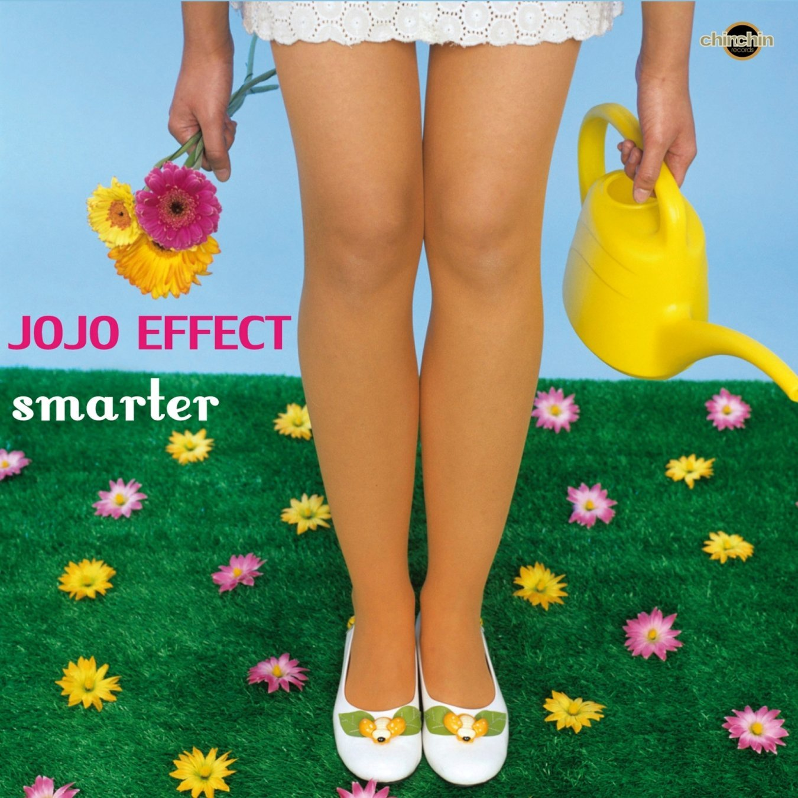

Jojo effect – Smarter
Geplaatst door: Cercei Lannister op Augustus 1, 2014
Genre: dance
JoJo Effect is an established band / project from Germany with international success. In their genre, they probably belong to the top Ten in the world. The fourth album of the electro-lounge-project comes with 16 tracks and is so pioneering, groovy and sophisticated that the name "smarter " is exactly the right name for the album! JoJo Effect has produced stylish and contemporary lounge, nu jazz, latin and electro- swing for 9 years up to now. Their titles have been licensed more than 480 times and are found worldwide on well-known compilations like Cafe´del Mar, Erotic Lounge, Brazilectro, Campari Lounge, Electroswing Revolution..to name just a few. Besides the dynamic groovy music, there is enough free space for these extraordinary singers: Soul-Sista Brenda Boykin and new to the scene, jazz singer Nelly Simon lead singer of "choochoo panini" and of course Anne Schnell all with their song writing skills, the vocal heart of JoJo Effect. There is active support this time from DJ "Gardener of Delight" on two tracks: First there is a remix of the Mills Brothers "Boog it" in an electro-swing style and second a very fine and super-smooth house remix of "Stay away from my Man", a track taken from JoJo Effect´s first album. Furthermore an exceptional co-operation with the "WDR Big Band" from Cologne: a remix of their version "Aguas de Marco" (Jobim) sung by the famous Brazilian singer Joyce Moreneo. What must be mentioned as well, are the wonderful guest musicians: trumpet player Thomas Siffling plays on the title song "smarter ", Lars Kuklinski and Karlos Boes from the "Club des Belugas band" on the songs "Minor Pie" and "Feels Like". Taking two years to produce and record, arrange and polish, with the finest studio equipment, JoJo Effect delivers "smarter" an album full of passion and natural ease that fills the audience with enthusiasm!
The fourth album of the electro-lounge-project comes with 16 tracks and is so pioneering
- Smarter
- Mungo swing
- Sweet heart
- Boog it (Jojo Effect & Gardener Of Delight Remix)
- Rockin' the blue
- Boykin, Brenda - Feels like
- Zouzoulectric - Hollywood
- Aha
- Aguas de Marco (Jojo Effect Remix)
- Stranded
- Gimme a soulbeat
- Minor pie
- Stay away from my man (Gardener Of Delight Remix)
- Suddenly (Electronic Album Mix)
- You're the love
- That's what you get